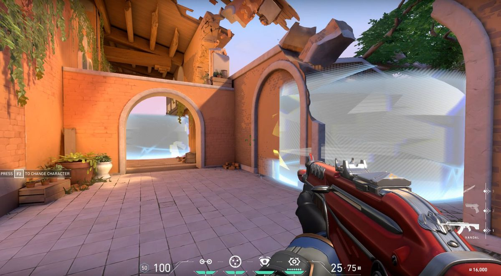
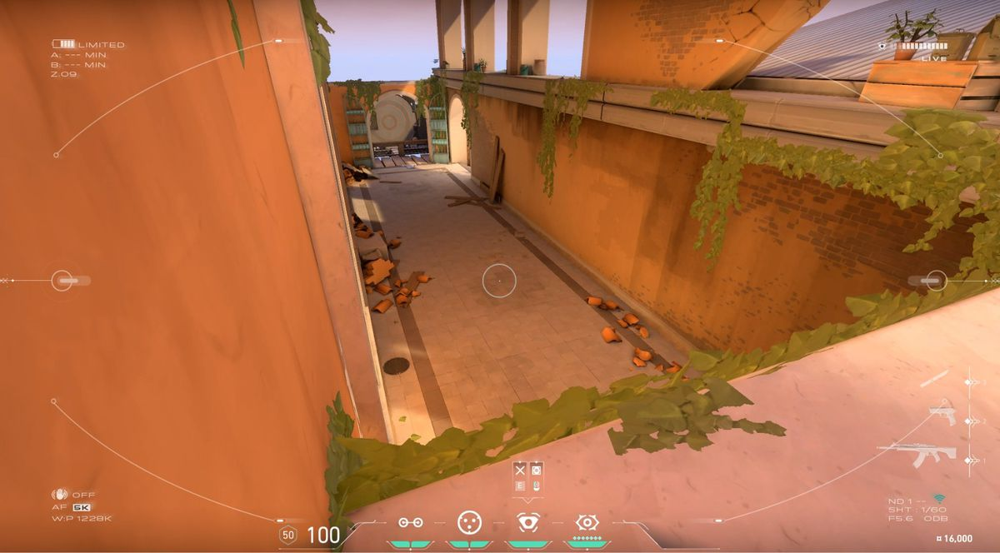
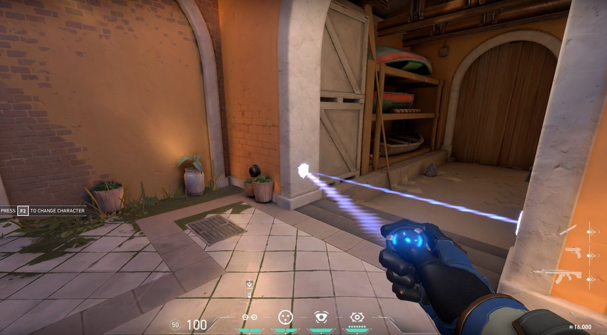

Cypher es un experto en información de Marruecos que se especializa en redes de vigilancia y es capaz de seguirle la pista al enemigo constantemente. No hay secreto a salvo ni maniobra que pase desapercibida. Cypher siempre está alerta.
Cypher cumple el Rol de Centinela,uno de los mejores junto a killjoy,en ataque se encarga de cerrar el mapa para evitar que el enemigo nos mate por la espalda.
Lanza instantaneamente una prisión cibernética frente a Cypher. Al activarla se crea una zona que bloquea la visión de los enemigos que la atraviesan.
Cypher coloca una camara espia en cualquier pared que apuntes.Al volver a utilizarla puedes ver a traves de ella,tambien puedes disparar una dardo localizador a tus enemigos.
Coloca un cable invisible pero destructible en una pared que conecta 2 extremos,cuando un enemigo lo active sera localizado en todo el mata y tambien estuneado.
Cypher lanza su sombre sobre el cadaver de un enemigo que revela la posicion de todos los otros que esten con vida.